Rezultāts



Rezultāts:
Bērnam stāvot, pleci ir pavērsti uz priekšu, galva izbīdīta uz priekšu, mugura veido apaļu izliekumu (it īpaši augšdaļā), un vēders var būt nedaudz izbīdīts uz āru. Ilgstoši saglabājot šādu pozīciju, var rasties sāpes mugurā, nogurums un koncentrēšanās grūtības.
Rekomendācija:
Apmeklēt fizioterapeitu. Ikdienā mudināt bērnu stāvēt un sēdēt taisni, regulāri mainīt pozas, veikt stiepšanās un muguras muskuļu stiprināšanas vingrinājumus, kā arī samazināt laiku, ko bērns pavada skatoties ekrānā ar noliektu galvu.